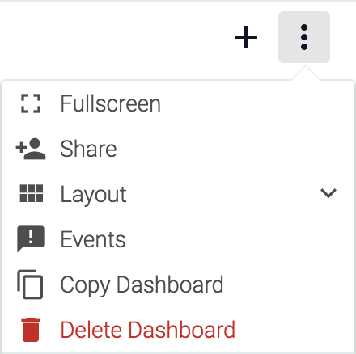
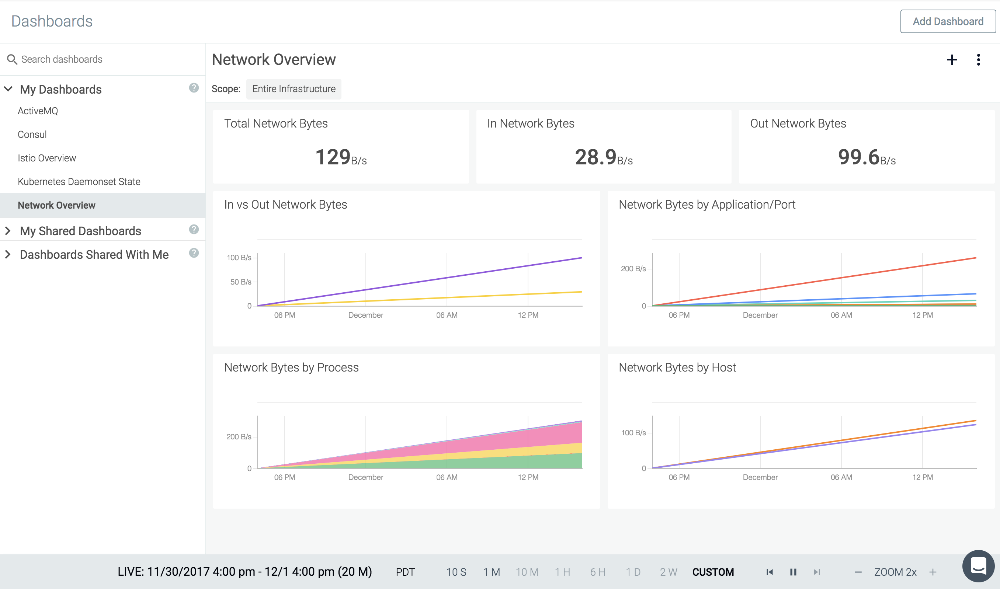
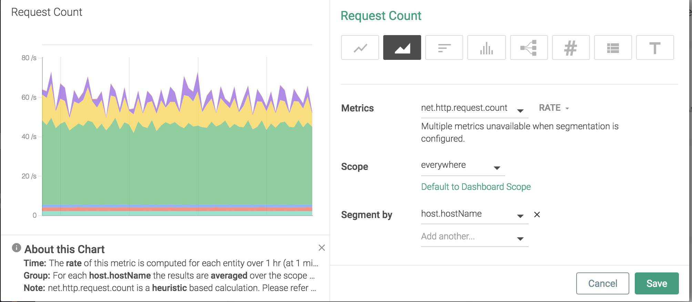
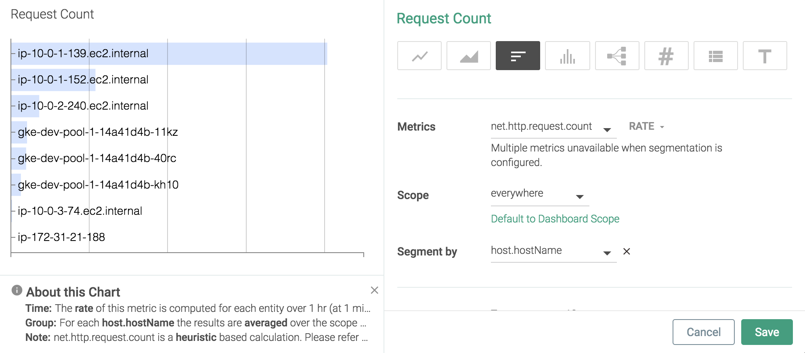
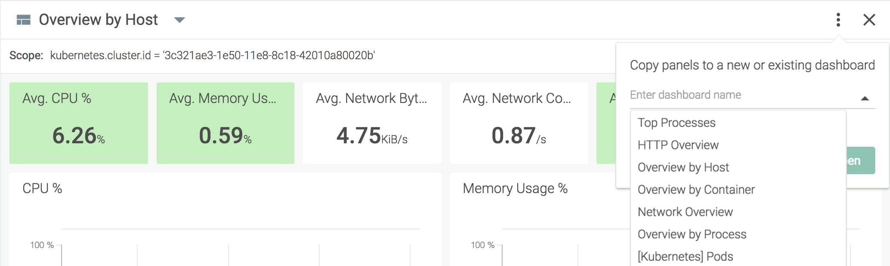

Dashboards
Sysdig users can create customized dashboards to display the most useful/relevant views and metrics for the infrastructure in a single location. Each dashboard is comprised of a series of panels configured to display specific data in a number of different formats:
Learn more about how dashboards and panels are created, organized, and managed in the following sections:
Note
Dashboard Scope
Dashboard and panel scope defines what data is valid for aggregation and display within the dashboard. Scope can be set at a dashboard-wide level, or overridden for individual panels, by any user type except for View Only users.
The current scope is displayed in the top left-hand corner of the module screen:
 |
For more information on how scopes work, refer to the Grouping, Scoping, and Segmenting Metrics documentation.
Configure Dashboard Scope
To configure the scope of an existing dashboard:
From the
Dashboardmodule, select the relevant dashboard from the dashboard list.Click the
Edit Scopelink in the top right of the module screen:
Open the first level drop-down menu.
Select the first level label either by clicking the desired label, or searching for the label, then clicking it.
Define how the value relates to the label, and define the value.
Scope editor restricts the scope of the selection for subsequent filters by rendering values that are specific to the selected labels. For example, if the value of the
kubernetes.namespace.namelabel iskube-system, the values of the subsequent label,container.namewill be filtered bykube-system.This means the containers rendered for filtering are only those that are part of the kube-system namespace.Optional: Dashboard Templating.
Note
Dashboard scope values can be defined as variables, allowing users to create a template, and use one dashboard for multiple outputs. For example, in the image below, the
kubernetes.namespace.namelabel is set as a variable:
Once saved, the dashboard has multiple values that can be displayed:

Optional: Add additional label/value combinations to further refine the scope.
Click the
Savebutton to save the new scope, or click theCancelbutton to revert the changes.Note
To reset the dashboard scope to the entire infrastructure, or to update an existing dashboard's scope to the entire infrastructure, open the first scope drop-down menu and select
everywhere.
Configure Panel Scope
To configure the scope of an existing dashboard panel:
From the
Dashboardmodule, select the relevant dashboard from the dashboard list.Hover the cursor over the desired panel, and select the
Edit(pencil) icon:
Click the
Override Dashboard Scopelink to enable a custom panel scope.
Note
To return an individual panel scope to the default dashboard scope, click the
Default to Dashboard Scopelink, and save the changes.Open the
Scopedrop-down menu.Either select the new scope, or search for the desired scope, and then select it.
Click the
Savebutton to confirm the changes.
Note
Panels that have a custom scope (a different scope to the overall dashboard) are marked with a shaded corner:
Managing Dashboards
This section helps you effectively use dashboards and share with your team.
Organizing Dashboards
Dashboards are organized into three main groups:
My Dashboards: Dashboards created by the current user.
My Shared Dashboards: Dashboards created by the current user, and shared with other users.
Dashboards Shared With Me: Dashboards created by other users, and shared with the current user.
Set a Default Dashboard
A default dashboard can be configured by setting the default entry point for a team, unifying a team's Sysdig Monitor experience, and allowing users to focus their immediate attention on the most relevant information for them. For more information on configuring a default entry point, refer to the Configure an Entry Page or Dashboard for a Team section of the Sysdig Platform documentation.
Display Dashboard Specific Events
Sysdig Monitor allows users to configure dashboards to display infrastructure events relevant to a dashboard's panels within the panels themselves. This allows users an even more in-depth view of the status of their environment. To configure how events are displayed:
On the
Dashboardtab, select the relevant dashboard from the dashboard list.Click the Dashboard Settings (three dots) icon, and select Events:
 Enable the
Show Eventsslider to show events in the dashboard panels.
Configure the available parameters, and click the
Closebutton.
Option | Description |
|---|---|
Event or Tag Search Bar | Defines specific events, or a scope of events, to display. |
Show max | Defines the maximum number of events to display in a panel. |
Include events related to | Determines whether the range of events displayed includes those for all metrics/scopes or not. |
Event Type | Display either custom events, alerts, or both. |
State | Determines the state of events displayed. |
Severity | Determines whether only high severity events or all events are displayed. |
Resolution | Determines whether all events, or only resolved/unresolved ones are displayed. |
Configure Dashboards
There are two parts to creating a dashboard - creating the dashboard itself, and creating the panels that display the information.
Pre-Built Dashboards
Sysdig provides a number of pre-built dashboards, designed around various supported applications, network topologies, infrastructure layouts, and services. These can be used to jumpstart the dashboard building process, as templates for further configuration.
Pre-built dashboards come with a series of panels already configured, based on the information most relevant users. The example below uses the Network Overview dashboard template:
|  |
The default dashboard includes number panels for total, in the network, and out of network bytes, and line graphs comparing in the network and out of network bytes, as well as byte usage by application/port, process, and by the host.
Create a New Dashboard
From the Explore Tab
To create a dashboard from the Explore tab:
Click the
Settings(three dots) icon for either the current dashboard or for a panel within the dashboard:Select either
Copy to Dashboard, orCopy Panel, depending on the icon selected in step one.Option 1:

Option 2:

Define the name of the new dashboard, and click the
Copy and Openbutton to save the new dashboard.
With the Wizard
To create a dashboard with the Dashboard Wizard.
On the
Dashboardstab, click theAdd Dashboardbutton.Select either a pre-built dashboard, or select
Blank Dashboardto create one from scratch.Define the name of the dashboard, and click the
Create Dashboardbutton.
The new dashboard will now be added to the side panel under My Dashboards, and is ready for configuration.
Configure Dashboard Layout
Configure Fullscreen
To view the current dashboard in fullscreen mode:
Click the Settings (three dots) icon for the dashboard, and select the
Fullscreenoption:
Note
Dashboards cannot be configured in fullscreen mode - they are read-only, until fullscreen mode is exited.
To exit fullscreen mode, either press the
ESCkeyboard key, or click theExit(cross) icon.
Configure Panel Size
The size of individual panels can be altered by moving the mouse cursor over the bottom right corner of a panel, until the diagonal resize cursor appears, pressing and holding the left mouse button, and increasing or decreasing the size of the panel by moving the cursor while pressed. The changes can be saved by clicking the Save Layout link, or reverted by clicking the Revert Changes link.
To configure the size of every panel in the dashboard:
On the
Dashboardstab, select the relevant dashboard from the left-hand panel.Click the
Settings(three dots) icon for the dashboard.Select
Layoutto open the drop-down menu.Select the desired panel size.
If the new size is correct, click the
Save Layoutlink. Otherwise, selectRevert Changes.
Note
Configuring this setting overrides all custom panel sizes.
Move Panels
To move a panel to a new position in the dashboard, move the mouse cursor over the top of the panel, until the hand cursor appears. Press and hold the left mouse button, and move the panel by moving the cursor while pressing the button. The changes can be saved by clicking the Save Layout link, or reverted by clicking the Revert Changes link.
Delete a Dashboard
To delete an existing dashboard:
On the
Dashboardstab, select the relevant dashboard from the left-hand panel.Click the
Settings(three dots) icon for the dashboard.Select
Delete Dashboard.Click the
Yes, Delete Dashboardbutton to confirm the change.
Configure Panels
Learn more about types, creating, and managing panels in the following sections:
Create Panels
Create a New Panel
Refer to Configure Dashboards for more information on configuring a pre-built dashboard.
To add a new panel to a dashboard:
On the
Dashboardstab, select the relevant dashboard from the left-hand panel.Click the
Add Panel(cross) icon.If you are configuring a blank dashboard, the available panel types will be displayed and can be selected directly, rather than clicking the
Add Panelicon:
Select a panel type:

Optional: Click the panel name to change it. Once the name is edited, click elsewhere in the panel to save the change.
Configure the relevant scope, segmentation, and metrics for the panel.
Refer to the Panel Types section for information on each type of panel.
Click the
Savebutton to create the new panel.
Duplicate a Panel
Hover over the desired panel, click the Settings (ellipsis) icon, and select Duplicate Panel.
Types of Panels
Line
Line panels provide additional functionality to other panel types, by allowing users to compare the current value to historical values. The image below shows the current net.http.request.count rate compared to the value six hours ago:
Area
|  |
Top List
|  |
Histogram
 |
Topology
Number
 |
Number panels provide additional functionality to other panel types, by allowing users to compare the current value to historical values. The image below shows the net.http.request.count value compared to the value two hours ago:
 |
Table
 |
Text
Text panels display custom markdown formatted text. The example below uses a text panel as a reminder list of the testing steps for a procedure.
 |
Text Panel Markdown
# H1 ## H2 ### H3 #### H4 ##### H5 ###### H6 H1 ====== H2 ------
*italics* or _italics_ **bold** or __bold__ **combined _emphasis_** ~~strikethrough~~
1. First ordered list item
2. Second item
* Unordered sub-list.
Sub-paragraph within the list item.
1. Third item
8. First ordered sub-list item.
103. Fourth itemGeneral guidelines:
The list item number does not matter. As shown in the example below, the formatting defines the lists.
List items can contain properly indented paragraphs, using white space.
U
nordered list can use: *, -, or +.
This is the first sentence. This line is separated from the one above by two newlines, so it will be a *separate paragraph*. This line is also a separate paragraph. This line is only separated by a single newline, so it's a separate line in the *same paragraph*.
Note
Trailing spaces can be used for line-breaks without creating a new paragraph. This behavior is contrary to the typical GFM line break behavior, where trailing spaces are not required.
Managing Panels
Copy Panels to a Different Dashboards
To copy a single panel to a different dashboard:
From the
Exploretab, select the desired drill-down view.Hover over the desired panel, select the
Settings(ellipsis) icon, and selectCopy Panel.Open the drop-down menu and select the desired dashboard, or use the text-field to search through existing dashboards.

Note
To copy the panel to a new dashboard, enter a name for the new dashboard in the text-field instead.
Click the
Copy and Openbutton to save the changes and navigate to the configured dashboard.
To copy all panels in a drill-down view to a dashboard:
From the
Exploretab, select the desired drill-down view.Select the
More Options(three dots) icon.Select
Copy to Dashboard: Open the drop-down menu and select the desired dashboard, or use the text-field to search through existing dashboards.
To copy the panel to a new dashboard, enter a name for the new dashboard in the text-field instead.
Click the
Copy and Openbutton to save the changes and navigate to the configured dashboard.
Alerts can be created directly from a dashboard panel:
Click the
More Options(three dots) icon.Select
CreateAlert.Configure the alert, and click the
Createbutton.For more information on creating alerts, refer to the [old]Alerts documentation.
Export Panel Data
Some panel types allow for data to be exported via either a CSV or JSON file:
CSV files can be downloaded for table and line charts.
JSON files can be downloaded for line charts.
To export CSV of a metric:
On the
Exploretab, navigate to the desired drill-down view.Hover over the desired panel, select the
Settings(three dots) icon, and selectExport CSVfrom the drop-down menu.
A CSV file will be automatically downloaded to the local machine.
To export JSON of a metric:
On the
Exploretab, navigate to the desired drill-down view.Hover over the desired panel, select the
Settings(three dots) icon, and selectExport JSONfrom the drop-down menu.
A JSON file will be automatically downloaded to the local machine.
Delete an Existing Panel
To delete a panel from a dashboard:
Hover over the desired panel, click the
Settings(ellipsis) icon, and selectDelete Panel.Click the
Yes, deletepanel button to confirm, or theCancelbutton to keep the panel.
Visualizing Metrics Using the Topology View
Topology View provides an interactive, animated interface to visualize how different components in your system interact with each other in real time. The interface by default renders a selected host's top processes and their interaction with processes on remote hosts or host groups. Entities in any valid logical grouping can be visually represented with Topology View. The interaction is depicted as nodes and links. Links connect nodes. Nodes and links radially expand from the left.
Nodes: The entities participating in network communication. A node could be a process, a container, a host, or any label identified by Sysdig Agent. For example:
kubernetes.pod.name.Links: The network connection between nodes.
 |
Hosts and their child processes (host.hostName > proc.name) serve as the default grouping for the Topology View. Scaling a Topology View is limited by the number of processes and connections. Sysdig Monitor creates the Topology View by identifying network endpoints (IP addresses) derived from system call data.
Topology View in the Explore tab provides pre-defined dashboards to represent CPU Usage, Network Traffic, and Response Time metrics, and as such, they are not configurable. It serves as a template diagnostic tool that provides bottom-up inter-process connection metrics as graphs. For a detailed description on each default metric type supported by the Topology View, see Topology Dashboards.
About Topology View
The UI allows you to zoom in, zoom out, fit, pan, and reset the display, and expand and collapse the nodes.
Zoom into an entity by clicking the associated + icon and view the top processes within the selected entity. You can expand the hosts to see individual processes running inside and corresponding metric value. The links indicating network connections are rendered between entities in the selected hierarchy and, when zoomed, between processes and entities. Use the mouse scroll wheel to zoom the content, then left-click and drag to move the map components within the window.
Topology View uses legends and color schemes. This section explains what they mean.
The line width (thickness) of the links expresses metric values relative to other connections in the system. Scaling line width is relative to the metric values associated with each link. Topology View dynamically adjusts the legend as the data recorded for each connection changes.
The thin black line(â): Lower metric values.
The thick black line(â): Higher metric values.
Dashed lines(---): A previously existed connection. For example, an active connection between node A and B, rendered as a solid line, could dissolve after a data update if that connection does not exist anymore in the new data set. Instead of removing it from the graph, Sysdig Monitor depicts the inactive connection as a dotted line until the next data update. If the connection returns in a subsequent data update, it is rendered again as a solid line. If the connection does not exist, the line will be removed.
The color scheme is determined by color coding for the customizable threshold. The nodes are identified by five colors:

Green indicates the node is healthy.

Yellow indicates the node is in a warning state.
Red indicates the node is in a critical state.

Grey indicates the node state is unknown. An unknown node typically signifies a node where no Sysdig Agent installed.
Light Blue indicates no threshold is defined for the metrics.
Configure Topology View
You can navigate to the Topology View from the Explore or Dashboard menus.
Access from Explore
The types of Topology View you can see on Explore are pre-defined dashboard templates that contain only a single panel, and as such, they can't be edited.
1. Click Explore .
2. On the Explore tab, click the Data Source drop-down menu.
3. Select the desired data source from the drop-down list.
4. Select a grouping for which you want to view a Topology.
5. From the Metrics and Dashboard drill-down menu, select Topology .
6. Select one of the three pre-defined Dashboards.
The Topology View for the selected metrics appears on the screen.
Access from Dashboard
You can either add a panel for the Topology View to an existing Dashboard or create a new Dashboard for Topology View with the Dashboard Wizard and add panels as necessary.
1. Click Dashboardsand select the relevant dashboard from the Search Dashboards panel.
3. Click the Add panel icon.
4. Select the Topology panel.
5. Specify the following:
Metric: Select a metric you want to visualize on the Topology View.
Link Metric: Select a network-related metric.
Aggregation: Select a aggregation type.
Group by: You can set up to five labels to develop a hierarchy for the Topology View. By default, the Topology View has two levels:
host nameorcontainer ID, based on the team scope.Scope: The scope of the panel is determined by the scope of the team that created it and the labels selected in the
Groupbyoption. The scope of the Topology View overrides the dashboard's global scope. The scope can only be built with labels that are specified in theGroupbyoption.
You can use one of the pre-defined dashboards as a template from the Dashboard Wizard. You can configure scope, aggregation, and metrics as well as add additional panels as required.
On the
Dashboardstab, click theAdd Dashboardbutton.Type Topology in the
SelectaDashboardsearch bar.Select one of the three pre-defined Dashboards.
Specify a name for the dashboard.
Click the
Create Dashboardbutton.
The new dashboard is added to the side panel under My Dashboards,and is ready for configuration.
Pre-Defined Dashboards
Sysdig provides a number of pre-defined dashboards to assist users in monitoring their environments and applications. This section outlines the main dashboards that are available out-of-the-box.
Application Dashboards
Dashboard | Description | Use Cases |
|---|---|---|
Elasticsearch | This view lists eight important metrics for node and document counts, shards, indexing time and query latency. |
|
HAProxy | This view reports metrics for host CPU use and proxy throughput. | |
Redis | This view reports seven metrics for host resource usage and application performance. | |
Cassandra By Node | This view shows how every node in a Cassandra cluster is performing, by mixing key system metrics with Cassandra-specific metrics such as requests volume and compactions. |
|
Cassandra Overview | This view shows how a Cassandra cluster is performing, by mixing key system metrics with Cassandra-specific metrics such as requests volume and compactions. |
|
HTTP Top Requests | This view details the top requested URLs to your web server, including the total number of requests, average and maximum times to service the requests, and the amount of traffic contained in the requests and responses. | |
MongoDB | This view shows how busy the MongoDB service is, which collections are in highest demand and which have the slowest performance. |
|
HTTP | This view provides a basic understanding of the health of your web server by showing the load being put on it and the server's ability to service requests in a timely manner. |
|
MySQL/PostgreSQL | This view shows the overall load and performance status of your SQL database transactions with metrics for the number of requests and how quickly they are handled. |
|
MySQL/PostgreSQL Top | This view shows the top SQL queries by displaying metrics for the number of queries received and the amount of traffic sent and received for the query. |
|
Compliance Dashboards
Dashboard | Description | Use Cases |
|---|---|---|
Compliance (Docker) | Provides an overview of the available compliance metrics for Docker. |
|
Compliance (Kubernetes) | Provides an overview of the available compliance metrics for Kubernetes |
|
Hosts and Containers Dashboards
Dashboard | Description | Use Cases |
|---|---|---|
Overview by Container | Displays resource usage statistics, including CPU, file bytes, memory and network bytes, for containers running within the defined scope. |
|
Overview by Host | Displays resource usage statistics, including CPU, file bytes, memory and network bytes, for hosts running within the defined scope. |
|
Overview by Process | Displays resource usage statistics, including CPU, file bytes, memory and network bytes, for the top processes running within the defined scope. |
|
Overview by Container Image | The container image overview breaks down resource usage metrics by images within the environment. | |
Container Limits | The Container Limits dashboard shows CPU and memory limits across the environment, and the percentages currently used. | |
Top Files | The Top Files dashboard displays a table of the most used files across the environment. By default, the column metrics are the total bytes used, errors encountered, and the total time for input/output operation relating to the file. | |
Sysdig Secure Summary | The summary dashboard provides a complete overview of the Sysdig Secure environment, including the number of active agents, the number of defined policies and how many have been enabled, and summary policy event information. | |
Top Processes | Lists the top processes running on the host/s. |
|
Sysdig Agent Summary | This view reports the number of Sysdig agents deployed in your environment and their versions. | |
Top Server Processes | Displays the resource consumption for server-oriented processes only (for example, httpd, java, and ntpd). |
|
File System | This table view shows directory mount points, file system devices, and capacity and usage information for the file systems mounted on the instance. When groups are selected, metrics are averages for similar filesystem mount points. NoteRemotely mounted file systems are not listed by default. To enable, add the entry ' |
|
Network Dashboards
Dashboard | Description | Use Cases |
|---|---|---|
Connections Table | The connections table dashboard displays a full list of the environmentâs local and remote endpoints, and all network traffic resource statistics relevant to those endpoints. |
|
Overview | The Network Overview dashboard provides a broad overview of network traffic for the environment, including total input and output, as well as traffic broken down by host, application, and process. | |
Response Times vs Resource Usage | The dashboard maps various usage statistics and response times, including memory and CPU usage, network response times, and total network and file bytes, across the time period specified. |
|
Top Ports | The top ports dashboard displays statistics broken down by the port, including the number of connections to each port, and the incoming, outgoing, and total bytes. |
Kubernetes Resource Usage Dashboards
The Kubernetes * Health dashboards break down resource and performance metrics by various logical entities to allow for an in-depth analysis, and for critical issues to be identified and isolated. Each dashboard is built around the Golden Signals approach to monitoring: Latency, Traffic, Errors, and Saturation. Resource utilization metrics are oriented toward health and performance. These are aspects like CPU, memory, network, and storage usage by Kubernetes object. kube-state-metrics is about the status or count. Pairing kube-state-metrics with resource utilization metrics, each dashboard provides a comprehensive picture of whatâs happening in your Kubernetes environment.
Dashboard | Description | Use Cases |
|---|---|---|
Kubernetes Deployment Health | Highlights whether each deployment has a sufficient number of available pods and resources, and indicates the number of pods running, desired, or have been updated. |
For example:
|
Kubernetes Namespace Health | Displays metrics such as resource requests and resource limits at the namespace level; identifies the performance of the Kubernetes entities such as pods, deployments, DaemonSet, Statefulset, and jobs, and compliance with replicaSets specs. Highlights the number of services, deployments, replicaSets, and jobs per namespace. | |
Kubernetes Nodes Health | Highlights the number of nodes that are ready, unavailable, or out of disk; the number of nodes that are under the memory, disk, or network pressure; compares allocatable capacity with requested capacity on the node; provides the number of pod resources of a node that are available for scheduling and the available capacity to serve the pods running on the nodes. | |
Kubernetes Pod Health | Helps identify potential bottlenecks by graphing the number of container restarts, the number of pods waiting to be scheduled, resource utilization of containers within each pod and available capacity to serve pod requests, the number of available pods compared to the desired pods, and the number of pods in available state and ready to serve requests. | |
Kubernetes replicaSet Health | Provides details such as the number of pods per replicaSet, the desired number of pods per replicaSet, and pods per replicaSet that are in a ready state. | |
Kubernetes Service Health | Displays resource utilization of your services, container distribution, response time, and request count; provides details such as pod restarts and error count indicating potential performance issues. | |
Kubernetes Health Overview | Provides a comprehensive overview of the performance of the entire Kubernetes environment, broken down by various logical entities and underlying resource availability and usage. This dashboard breaks down resource and performance |
|
Kubernetes Cluster and Node Capacity | Highlights a comprehensive overview of the performance of the hosts or nodes that form the Kubernetes cluster, including CPU, memory, and file system usage, and network traffic. Before analyzing the Dashboard, consider the following guidelines related to resource usage:
For these reasons, it can be deduced that
|
Kubernetes State Dashboards
The Kubernetes * State dashboards provide insights into the state of a Kubernetes environment and help ensure container-based services are scheduled and running as expected.
Dashboard | Description | Use Cases |
|---|---|---|
Kubernetes State Overview | Provides an overview of the state of the Kubernetes environment. Lists the number of Kubernetes objects and determines whether each deployment has a sufficient number of available pods and containers. |
|
Kubernetes Daemonset State | Highlights the list of pods that are ready, scheduled, unscheduled, and desired by each Daemonset. | |
Kubernetes Namespace State | Displays the number of available Kubernetes objects at the namespace level; identifies potential bottlenecks by giving the number of pod restarts, and a summary of pod status and pod capacity. | |
Kubernetes Resource Quota State | Provides an overview of resource limit and request, and the number of replication controllers, services, service ports, service load balancers, configMap, and secrets. | |
Kubernetes Pod State | Highlights the number of pods that are ready, the number of container per pod, and the total number of nodes. The pod capacity summary lists the state of pods and corresponding resource usage. Resource usage is color-coded to identify potential problems. | |
Kubernetes Stateful State | Displays the number of pods that are ready and container per Statefulset. It highlights the number of pod restarts, pods per Statefulset and the desired number of pods. The pod capacity summary lists the state of pods and corresponding resource usage in each Statefulset. Resource usage is color-coded to identify potential problems. | |
Kubernetes Nodes State | Highlights the number of nodes that are ready, unavailable, or out of disk, the number of nodes that are under the memory, disk, or network pressure; displays allocatable resource capacity on the node to serve the pods; provides a summary of pod capacity. | |
Kubernetes Deployment State | Indicates the number of pods and replicas running, desired, available, paused, unavailable or have been updated in each deployment. Summarizes available and desired resource capacity for each deployment, and associated pods and namespaces. |
Services Dashboards
Dashboard | Description | Use Cases |
|---|---|---|
Overview by Service | The Overview by Service dashboard displays the size, performance, and limitations of each service running in the container image. | |
Service Overview | The Service Overview dashboard outlines a single service - what resources it is using, response times, the container and request counts, and how the response times measure up against the resource utilization. |
Topology Dashboards
Dashboard | Description | Use Cases |
|---|---|---|
CPU Usage | The CPU Usage dashboard uses the |
|
Network Traffic | The Network Traffic dashboard displays how network bandwidth is spread out across the environment. |
|
Response Times | The Response Times dashboard uses the |
Save and Restore Dashboards with Scripts
Sysdig Monitor provides users the ability to save existing dashboards to a locally controlled file, and create new dashboards identical to the ones previously saved. This can be done via Sysdig's Python client library example scripts. The save script stores all current dashboards for the active account in a .zip archive, while the restore script adds all dashboards in the archive to the list of dashboards.
The restore script does not have to target the same account as the save script. This allows dashboards to be saved from one user and restored to multiple users.
Warning
Restoring dashboards will not override the user's existing dashboards. Instead, new dashboards will be added to the list.
If this script is used in a strictly backup/restore capacity, dashboards will need to be deleted manually from the account, either before or after the restore action is completed.
Prerequisites
Saving and restoring the scripts has the following prerequisites:
Python 2.x (2.7.x)
pipversion 1.3 or later.Note
pipis installed as part of the Python package for versions 2.7 and later.virtualenv (recommended)
The library and example scripts are available in the Sysdig GitHub repository: https://github.com/draios/python-sdc-client.
Download the Scripts
To configure the local environment for the scripts:
Either download a .zip archive of the python client from the repository and unpack it or clone the repository:
sysdig@user:~$ git clone https://github.com/draios/python-sdc-client.git
In a terminal, navigate to the directory.
Configure the Python environment as necessary.
Note
If you are unfamiliar with Python, Sysdig recommends setting up via
pip&virtualenv:sysdig@user:~$ mkdir -p ~/workingdir/venv # declare where you want all python tools installed sysdig@user:~$ sudo virtualenv ~/workingdir/venv # prepare the workspace -- this may download several things sysdig@user:~$ source ~/workingdir/venv/bin/activate # cause all python tools to use this workspace from now on (venv) $ # at this point the prompt reminds us we're in the virtual environment (venv) $ pip install . # install the sdcclient library into the venv
The sdcclient module is now available to Python.
Save All Dashboards with a Python Script
To save the dashboards:
In a terminal, access the virtual environment set up in Download the Scripts.
Run the script, replacing
API_TOKENwith the API token for the relevant user, andSAVED_DASHBOARDS.ZIPwith the desired name of the zip file:Note
See Retrieve the Sysdig API Token for details.
(venv) $ sudo python examples/download_dashboards.py API_TOKEN SAVED_DASHBOARDS.ZIP Dashboard name: JVM, # Charts: 5 Finished writing dashboard data in zip format to SAVED_DASHBOARDS.ZIP
Restore Dashboards with a Python Script
To restore dashboards from a .zip archive
In a terminal, access the virtual environment set up in Download the Scripts.
Run the script, replacing
API_TOKENwith the API token for the relevant user, andSAVED_DASHBOARDS.ZIPwith the correct zip file:(venv) $ sudo python examples/restore_dashboards.py API_TOKEN SAVED_DASHBOARDS.ZIP Dashboards pushed. (venv) user@server:~/python-sdc-client$